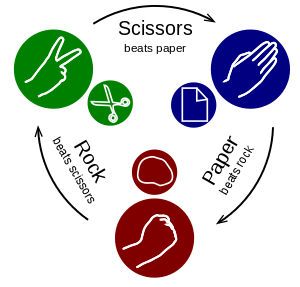

Pattern Recognition and Reinforcement Learning¶
Overview¶
Problem: Getting son to eat broccoli
Strategies:
- Acclimatization: Serve once a week until he gets used to it
- Better than alternative: It’s better than spinach
- Enticements: We’ll watch your favorite movie after
- Trickery: It’s candy
- Testimonial: Your best friend likes it
- Wait it out: We’re not leaving this table until …
- Piecemeal: Just one little bite
- Appeal to Reason: Great source of vitamins K and C
Reinforcement Learning:
Randomly try strategies. If they work, choose them more often.
Rock Paper Scissors¶
This is an iterated adversarial zero-sum two-person game of perfect information.
The scoring logic is easily encoded in a Python dictionary:
# scorer['RS'] -> 1 meaning Rock cuts Scissors is +1 for the first player.
scorer = dict(SP=1, PR=1, RS=1, PS=-1, RP=-1, SR=-1, SS=0, PP=0, RR=0)
Now, it’s time to thinking about winning (not losing):
- Playing randomly assures that we lose no more than one-third of the time, regardless of our opponent’s strategy.
- If our opponent is completely predictable, we can always win.
- In the real world, humans have a hard time simulating perfect randomness
or who “have a plan” to beat us:
- A mild preference for paper
- Propensity to select rock after they’ve played scissors
- If we play paper, they often select scissors on the next round
- They tend to copy our last play
- In other words, there may be patterns that we can detect and exploit to win more than a third of the time.
Our Approach¶
Generate multiple competing pattern recognition strategies
Choose between the strategies multi-arm bandit approach to reinforcement learning.
Core logic:
for trial in range(trials): # choose our move # get opponent's move # determine the winner # update move history and strategy weights
Helpful Python Skills¶
itertools.chain()links to multiple iterables into one:>>> from itertools import chain >>> list(chain('RPRPS', 'RPS')) ['R', 'P', 'R', 'P', 'S', 'R', 'P', 'S']
itertools.cycle()repeats a sequence over and over again:>>> from itertools import cycle, islice >>> list(islice(cycle('RPS'), 9)) ['R', 'P', 'S', 'R', 'P', 'S', 'R', 'P', 'S']
collections.Counter()tallies frequencies of the inputs:>>> from collections import Counter >>> Counter('RPRPSRPSR') Counter({'R': 4, 'P': 3, 'S': 2})
Counter.most_common(n)picks the n most common counts:>>> Counter('RPRPSRPSR').most_common(2) [('R', 4), ('P', 3)]
zip(*somedict.items())transposes items into a separate keys and values:>>> d = dict(R=4, P=3, S=2) >>> keys, values = zip(*d.items()) >>> keys ('R', 'P', 'S') >>> values (4, 3, 2)
zip(a, a[1:])groups input into overlapping digraphs:>>> a = 'abcde' >>> list(zip(a, a[1:])) [('a', 'b'), ('b', 'c'), ('c', 'd'), ('d', 'e')]
random.choices(population, weights)[0]makes a weighted choice from a population:>>> from random import choices >>> choices(['R', 'P', 'S'], [6, 3, 1], k=10) ['P', 'P', 'R', 'S', 'R', 'P', 'P', 'R', 'R', 'P'] >>> Counter(_) Counter({'P': 5, 'R': 4, 'S': 1})
The Code¶
''' Generic learning algorithm for adversarial two-person
zero-sum games of perfect information.
General approach: Make a list of strategies based
on pattern recognition. Use the multi-arm bandit
approach to learning which strategies win the most.
'''
from collections import Counter
from random import choices, choice
from itertools import chain, cycle
from pprint import pprint
# Game Definition ################################
# https://en.wikipedia.org/wiki/Rock%E2%80%93paper%E2%80%93scissors
# scorer['RS'] -> 1 meaning Rock cuts Scissors is +1 for the first player.
scorer = dict(SP=1, PR=1, RS=1, PS=-1, RP=-1, SR=-1, SS=0, PP=0, RR=0)
# Scissors cuts Paper; Paper covers Rock; Rock crushes Scissors
ideal_response = {'P': 'S', 'R': 'P', 'S': 'R'}
options = ['R', 'P', 'S']
# Strategy Utilities #############################
def select_proportional(events, baseline=()):
rel_freq = Counter(chain(baseline, events))
population, weights = zip(*rel_freq.items())
return choices(population, weights)[0]
def select_maximum(events, baseline=()):
rel_freq = Counter(chain(baseline, events))
return rel_freq.most_common(1)[0][0]
# Strategies #####################################
def random_reply(p1hist, p2hist):
return choice(options)
def single_event_proportional(p1hist, p2hist):
""" When opponent plays R two-thirds of the time,
respond with P two-thirds of the time.'
"""
prediction = select_proportional(p2hist, options)
return ideal_response[prediction]
def single_event_greedy(p1hist, p2hist):
""" When opponent plays R more than P or S,
always respond with P.'
"""
prediction = select_maximum(p2hist, options)
return ideal_response[prediction]
def digraph_event_proportional(p1hist, p2hist):
""" When opponent's most recent play is S
and they usually play R two-thirds of the time
after an S, respond with P two-thirds of the time.
"""
recent_play = p2hist[-1:]
digraphs = zip(p2hist, p2hist[1:])
followers = [b for a, b in digraphs if a == recent_play]
prediction = select_proportional(followers, options)
return ideal_response[prediction]
def digraph_event_greedy(p1hist, p2hist):
""" When opponent's most recent play is S
and they usually play R two-thirds of the time
after an S, respond with P all of the time.
"""
recent_play = p2hist[-1:]
digraphs = zip(p2hist, p2hist[1:])
followers = [b for a, b in digraphs if a == recent_play]
prediction = select_maximum(followers, options)
return ideal_response[prediction]
strategies = [random_reply, single_event_proportional, single_event_greedy,
digraph_event_proportional, digraph_event_greedy]
def play_and_learn(opposition, strategies=strategies,
trials=1000, verbose=False):
strategy_range = range(len(strategies))
weights = [1] * len(strategies)
p1hist = []
p2hist = []
cum_score = 0
for trial in range(trials):
# choose our move
our_moves = [strategy(p1hist, p2hist) for strategy in strategies]
i = choices(strategy_range, weights)[0]
our_move = our_moves[i]
# get opponent's move
opponent_move = opposition(p2hist, p1hist)
# determine the winner
score = scorer[our_move + opponent_move]
if verbose:
print(f'{our_move} ~ {opponent_move} = {score:+d}'
f'\t\t{strategies[i].__name__}')
cum_score += score
# update move history and strategy weights
p1hist.append(our_move)
p2hist.append(opponent_move)
for i, our_move in enumerate(our_moves):
if scorer[our_move + opponent_move] == 1:
weights[i] += 1
print(f'---- vs. {opposition.__name__} ----')
print('Total score:', cum_score)
pprint(sorted([(weight, strategy.__name__) for weight, strategy in zip(weights, strategies)]))
if __name__ == '__main__':
def human(p1hist, p2hist):
return input(f'Choose one of {options!r}: ')
def fixed_ratio(p1hist, p2hist):
return choices(options, (1, 2, 3))[0]
def cycling(series):
iterator = cycle(series)
def cycle_opponent(p1hist, p2hist):
return next(iterator)
return cycle_opponent
play_and_learn(opposition=fixed_ratio)
play_and_learn(opposition=random_reply)
play_and_learn(opposition=cycling('RPRSS'))
play_and_learn(opposition=human, trials=10, verbose=True)
Critiques and Improvements¶
- When humans are losing, they generally change they strategy, so we should “age” our weights to adapt to the change.
- The random_reply strategy wins one-third of the time so it keeps getting selected when other strategies are doing better.
- We need to keep random_reply in the mix in case our strategies get figured-out and gamed. Randomness is your best defense against a smarter adversary.
- The multi-arm bandit approach (choosing the strategy proportionally to wins and losses) results in very slow learning.
- Humans get bored with this game quickly, so it is hard get people to test it.
Where you can go from here¶
- None of the code logic is hard-wired to the basic game.
- It is easy to add new strategies.
- Or to evaluate various published how-to-win strategies.
- Changing the game definition logic allows for more complex games such as rock-paper-scissors-lizard-spock: